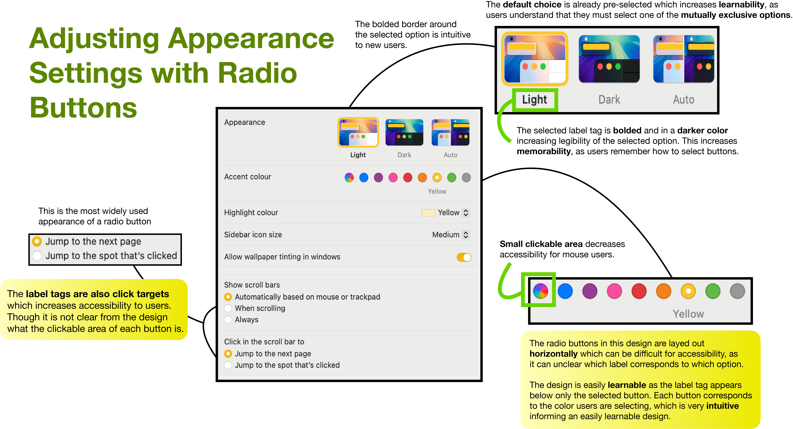

Accessible Components: Radio Buttons
Role: UX Researcher, Web Accessibility Researcher, UI Designer
Skills: Interface Annotation, Keyboard & Screen Reader Accessibility
Timeline: February 2025
While traditionally visualized as circles, modern interfaces of radio buttons reimagine them with icons, tags, and color blocks. This study compares how Pinterest, Duolingo, and Apple tailor radio buttons for unique interactions—and how those choices impact accessibility.
I am interested in analyzing accesibility differences across mouse touchpad, keyboard, and mobile users. This will help me become a better UX Researcher, understanding how designing for one type accessibility might conflict another.
Pinterest: The Use of Original Radio Buttons
Pinterest rarely uses radio buttons. I analyze a single instance to understand its role in the interface and why other components are favored.
Mouse / Touchpad
- Entire label is clickable — improves ease of use.
- “Apply” button is far from selection — slows interaction.
Keyboard
- Cannot select or navigate radio buttons without mouse.
- Enter key doesn’t submit selection; Esc gives no feedback.
- Keyboard flow is unintuitive and incomplete.
Mobile / Touch
- Clickable area includes label — improves usability.
- Selection applies instantly — limits toggling control.
Apple Settings: Challenging Radio Button Design Conventions with Color
Apple’s desktop settings challenge conventional radio button design by integrating previews, color buttons, and multiple visual states. There are multiple design iterations including previews of what pressing each radio button option will result in, as well as making the button itself correspond to the value users are selecting (color buttons).
Mouse / Touchpad
- Default selection reinforces mutual exclusivity and learnability.
- Color-aligned buttons and previews improve intuitiveness.
- Classic circular radios are too small — hurts usability.
Keyboard
- Keyboard navigation is mostly unavailable — users can’t access radio options.
- Major accessibility gap for non-mouse users.
Mobile / Touch
- No mobile equivalent for appearance settings — inconsistent experience.
- Where used, large tap targets and previews improve usability.
Duolingo: Numbering and Tagging Radio Containers for Accessibility
Duolingo uses many different forms of radio buttons, including those with easy-to-understand icons as tag options, as well as numbering the available options to users. In this case I have decided to analyze one form of their many radio button designs where the buttons themselves are numbers, and how this affects learnability and accessibility.
Mouse / Touchpad
- No default selection encourages active choice.
- Hover target includes full button area — improves accessibility.
- Cannot return to unselected state — limits flexibility.
Keyboard
- Users can select with 1/2/3 keys — improves access.
- No way to reset or preview — reduces control and feedback.
- Shortcuts are not visible — low discoverability.
Mobile / Touch
- Tap immediately applies filter — limits option exploration.
- Visual feedback (e.g., bolding) inconsistent with desktop.
Duolingo: State Models of the Interaction
To better understand user behavior, I mapped out how users currently interact with Duolingo’s radio button-style tags. I chose Duolingo because — unlike Pinterest or Apple — its design supports keyboard interaction fairly well, offering numeric key shortcuts (1, 2, 3) for selection.
However, limitations remain: there’s no way to deselect once a choice is made, and discoverability of these shortcuts is low. This model highlights the strengths and friction points users encounter across different input methods.
Mouse Interaction State Model
Keyboard Interaction State Model
Duolingo: State Models with Intentional Trade-Offs
I then redesigned the interaction with specific accessibility trade-offs in mind, to understand accessibility is not "one fits all" in solutions. Balancing key needs across user groups is critical when designing for large user bases of social media.
My revised model prioritizes screen reader and keyboard users: adding an Esc key function to clear selections and improved focus handling. However, these changes come at a cost to mouse users. For example, clicking away from the selection resets the choice — a less fluid experience for repeat mouse interactions.
Mouse Interaction Tradeoff Model
Keyboard Interaction Tradeoff Model
Redesigning a Component
Duolingo: Changing the Initial State of the Buttons
This redesign of the initial state helps users understand that a selection is required with radio buttons.
- The design signals that these options/tags are mutually exclusive.
- Having one preselected option may help first-time users understand selection is required.
- Rotating buttons on highlight improves learnability and memorability.
- Keyboard shortcuts could be displayed visually to guide navigation.
Pinterest: esigning an Explicit Clickable Target
This redesign enhances efficiency and learnability by eliminating unnecessary interactions.
- Removed the unnecessary “Clear All” button in favor of default “All Pins.”
- “All Pins” acts as a reset, simplifying the user flow.
- Border clearly shows clickable area, enhancing usability.
- Keyboard navigation hints can increase accessibility.
Key Takeaways:
- Designing for accessibility means making trade-offs—what benefits keyboard users may hinder mouse interactions.
- Visual minimalism, like Apple’s design, can come at the cost of accessibility if not paired with robust keyboard support.
- Most interfaces I tested lacked full keyboard navigation—prompting me to prioritize it in my redesigns (e.g., Esc to clear, Enter to submit).
- Expanding click targets and linking labels directly improves usability for both touch and mouse users.
- Accessible design is not just about adding features—it's about rethinking interaction flows for diverse users.